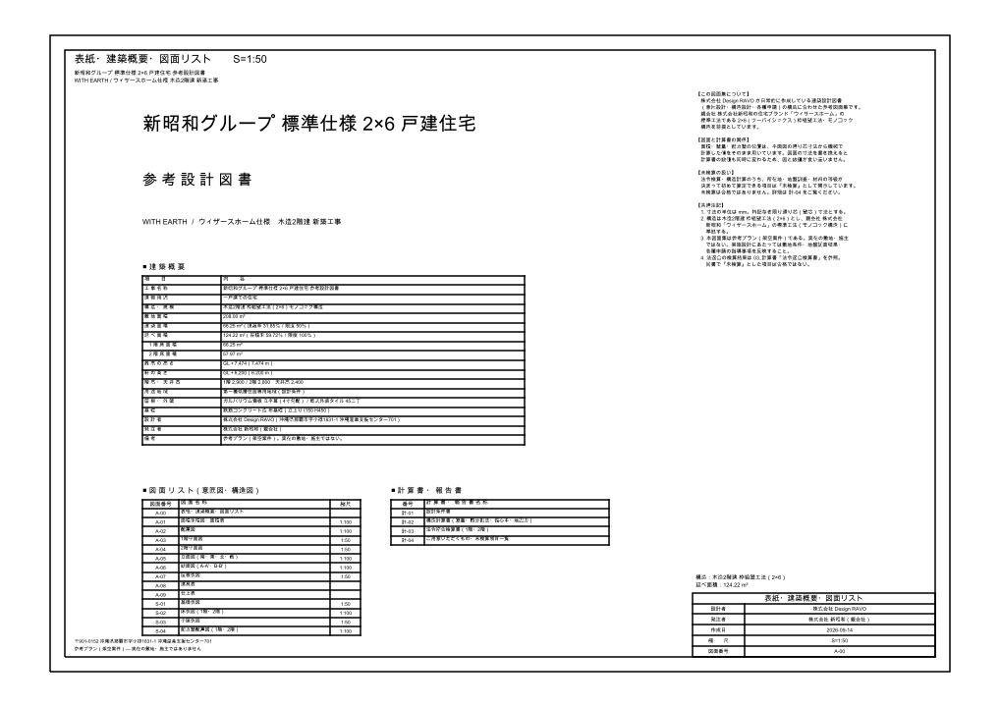
このページは URL をご存じの方であれば閲覧できます。 検索エンジンには載らないよう設定していますが、公開の場に置かれています。 社外への共有にあたってはご留意ください。非公開での運用をご希望の場合はお申し付けください。
図面一覧（全 14 面）
画像または「PDF」を押すと図面が開きます。PDF は A2（594×420mm）実寸で、 A2 に等倍印刷すれば各図面に記した尺度どおりの寸法で出ます。 「DXF」は編集用のデータで、AutoCAD / BricsCAD / DraftSight / JW-CAD で開けます。
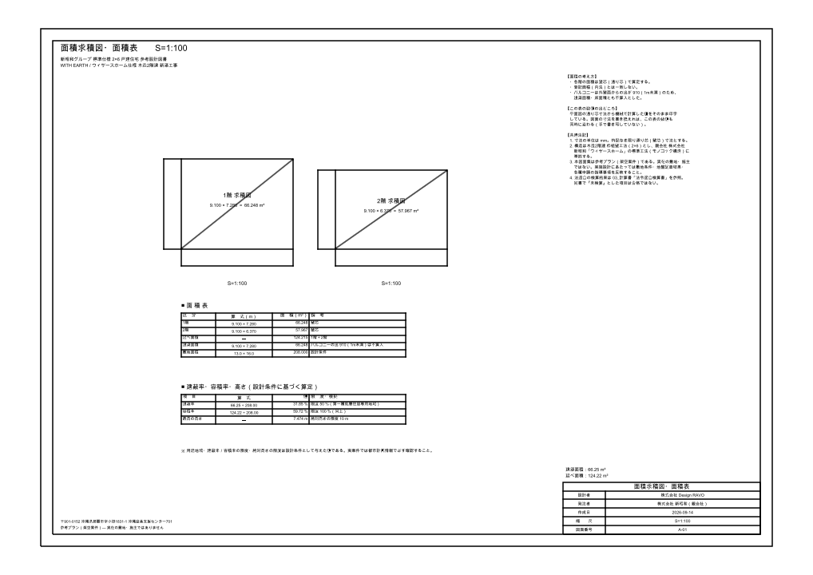
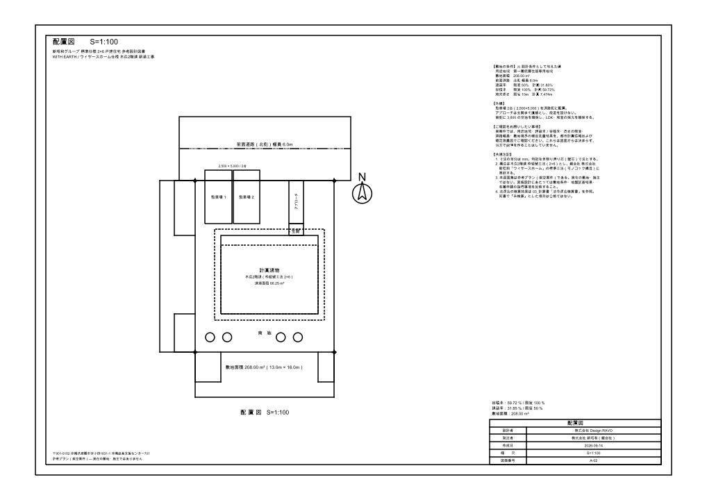
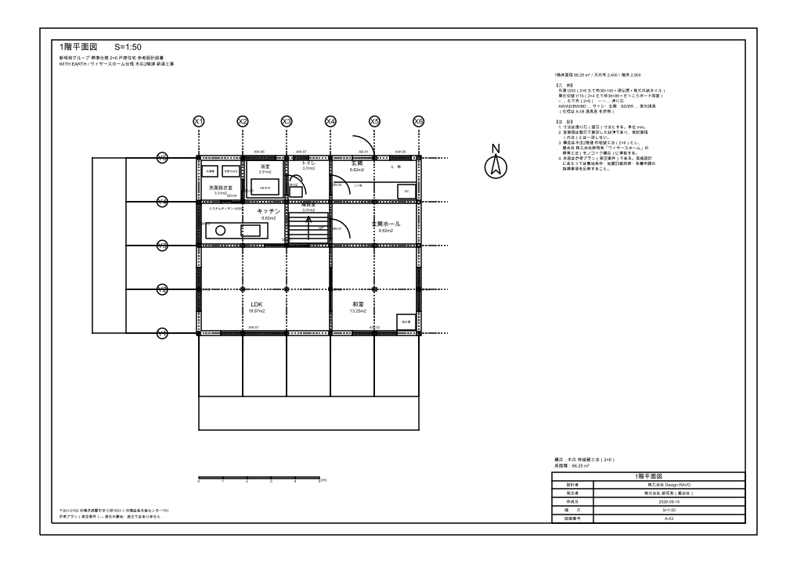
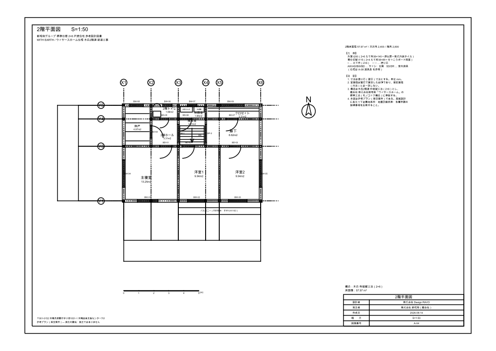
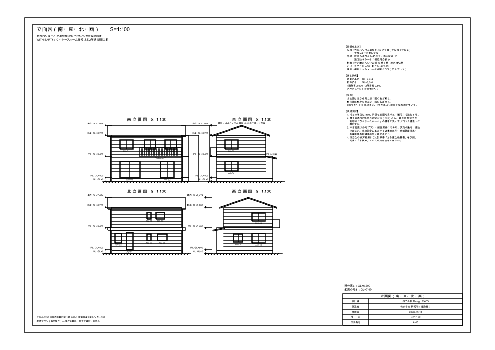
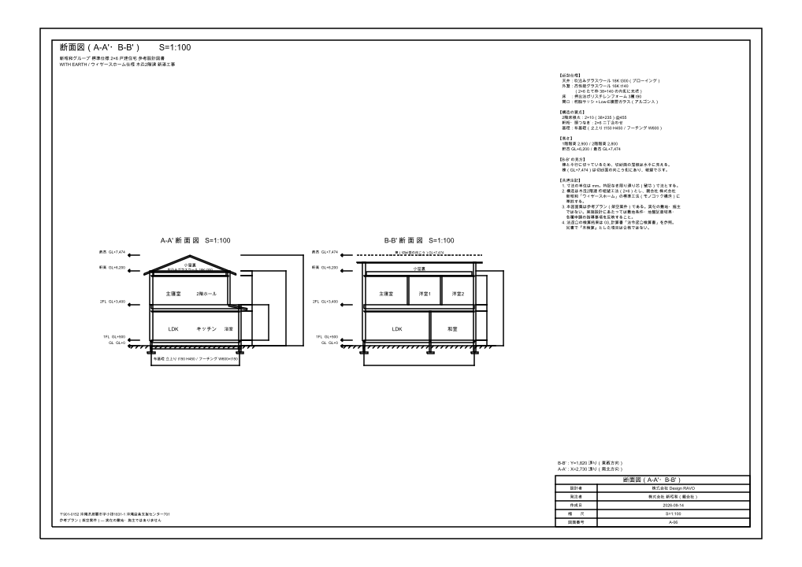
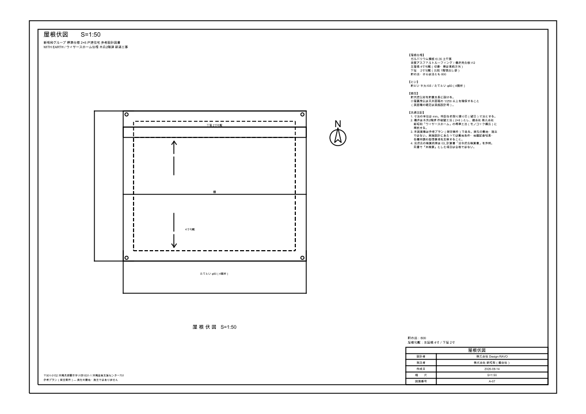
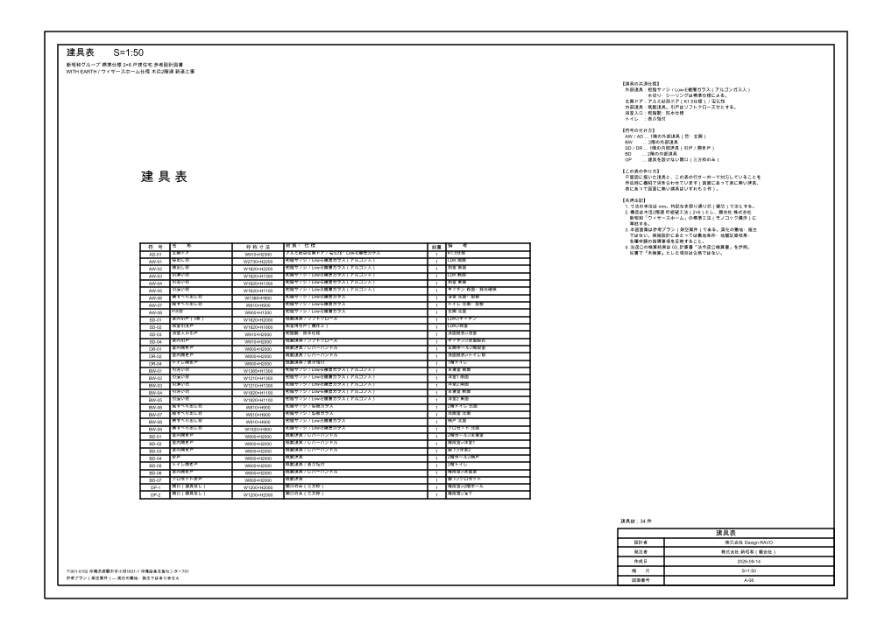
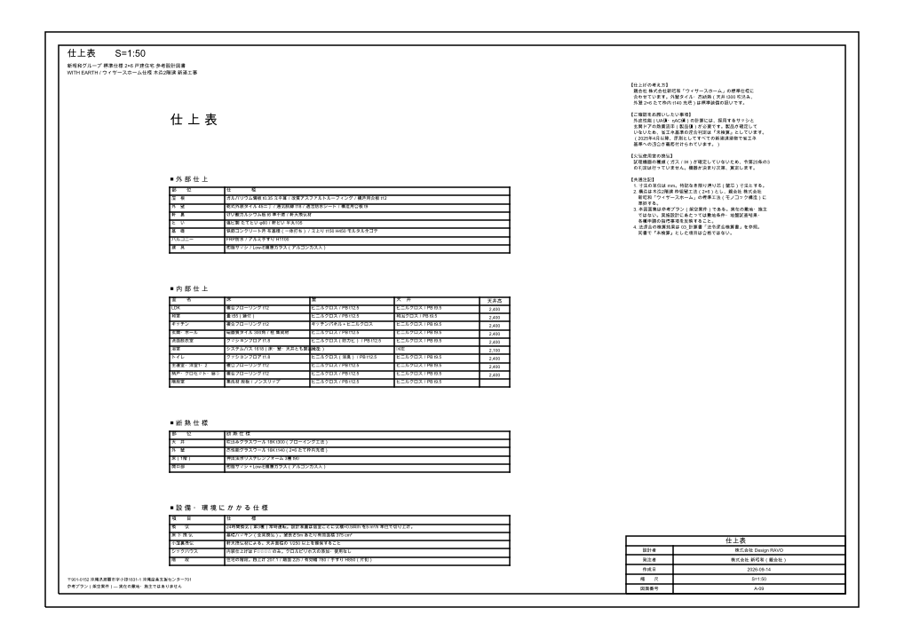
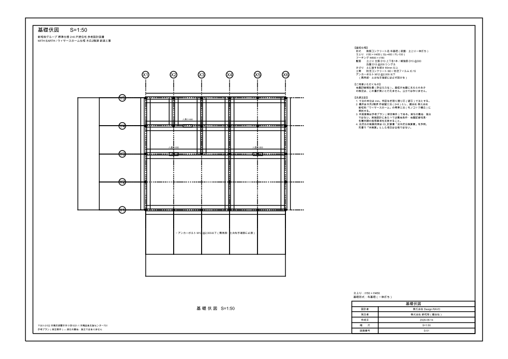
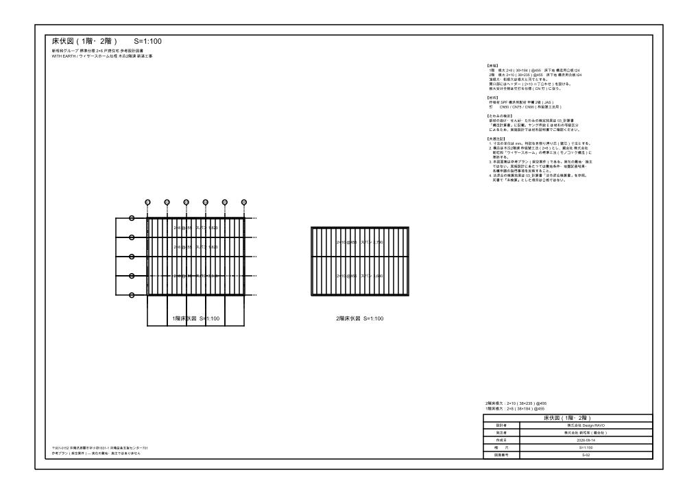
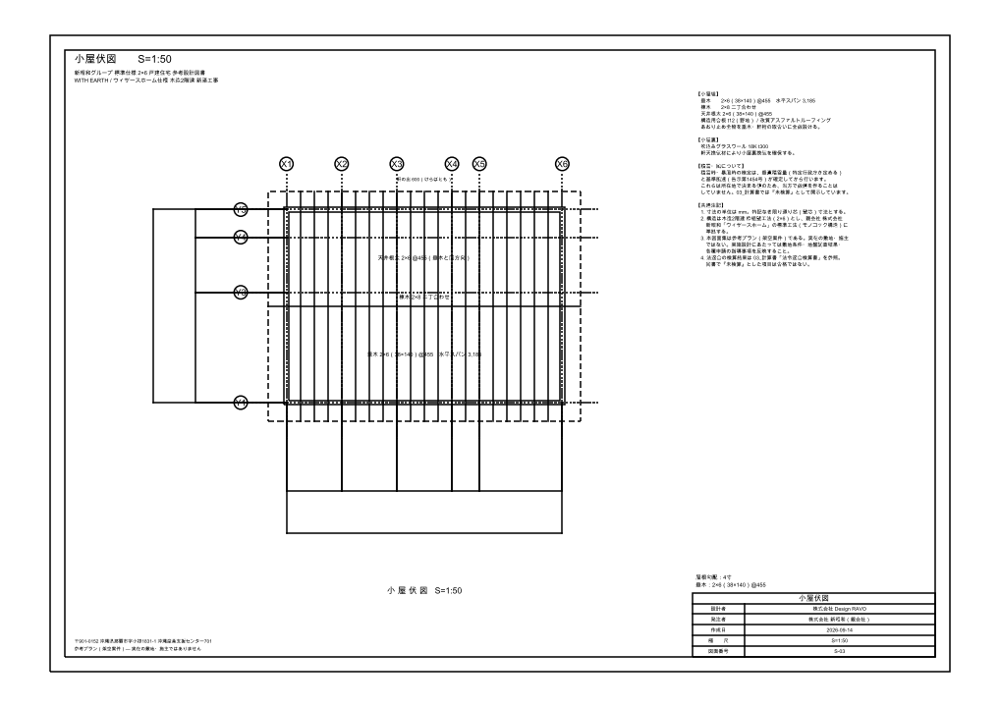
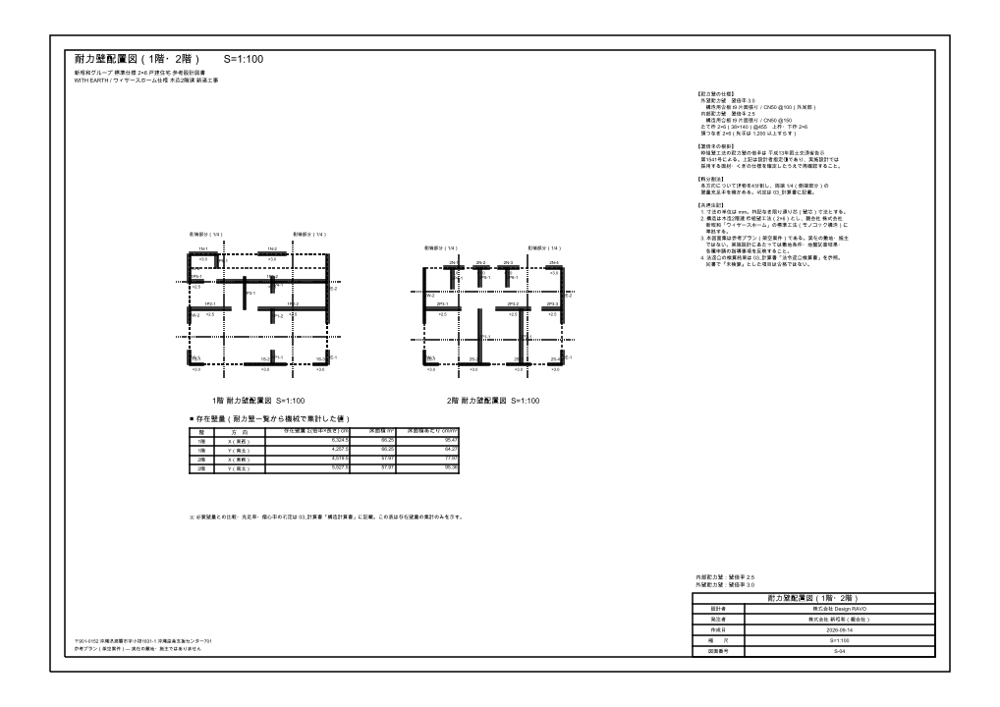
建築概要
| 建物用途 | 一戸建ての住宅 | 構造・規模 | 木造2階建 枠組壁工法（2×6）モノコック構造 |
|---|---|---|---|
| 敷地面積 | 208.00 m² | 建築面積 | 66.25 m²（建蔽率 31.85％／限度 50％） |
| 延べ面積 | 124.22 m²（1階 66.25／2階 57.97） | 容積率 | 59.72％（限度 100％） |
| 最高の高さ | GL＋7,474（7.474 m） | 軒の高さ | GL＋6,200（6.200 m） |
| 屋根・外壁 | ガルバリウム鋼板 立平葺（4寸勾配）／乾式外装タイル 45二丁 | 基礎 | 鉄筋コンクリート造 布基礎（立上り t150 × H450） |
検算の結果
不適合はありません。ただし「未検算」の項目は合格ではありません。 所在地・地盤調査・材料の等級・製品仕様が確定してから算定します。
| 区分 | 適合 | 不適合 | 未検算 |
|---|---|---|---|
| 法令適合検算（1階） | 12 | 0 | 93 |
| 法令適合検算（2階） | 11 | 0 | 94 |
| 構造検定（1階） | 4 | 0 | 5 |
| 構造検定（2階） | 4 | 0 | 5 |
主な実測値
| 項目 | 結果 |
|---|---|
| 室面積（図面の印字値と読取値の突合） | 19 室すべて一致（差 0.00 m²） |
| 建具（図面と建具表の照合） | 34 件すべて一対一で一致 |
| 壁量計算（存在壁量 ≧ 必要壁量） | 1階X 6,324.5／1階Y 4,257.5／2階X 4,519.5／2階Y 5,527.5 cm（必要 1階 3,210.4／2階 2,240.5 cm） |
| 偏心率（上限 0.15） | 1階 X 0.1098／Y 0.0859 2階 X 0.0069／Y 0.0047 |
面積・壁量・耐力壁の位置・建具表は、平面図の通り芯寸法から機械で計算した値をそのまま 用いています。図面の寸法を書き換えると計算書の数値も同時に変わるため、図と数値が 食い違うことが起こりません。